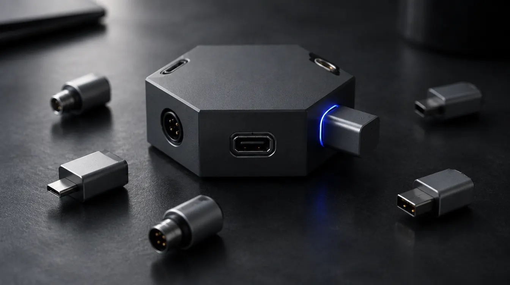

04 Case study Private
Aristophanes
It began as a scene partner for one actor rehearsing Lysistrata alone. Then a director asked for the whole company. Today it is a platform for theatre: each production gets its own space, with roles that mirror the org chart, a call board, a rehearsal calendar, a shared wardrobe and a box office, and every actor still has a partner to rehearse with.

01 The idea
Amateur theatre runs on paper scripts, group chats and goodwill. Actors learn their lines alone. Directors juggle rehearsal times, costume photos and who's playing whom across a dozen threads. Nothing ties the company together.
Aristophanes is an end-to-end platform for theatre, from solo practice to running a whole production. Each production is its own space, like a server for the company. The roles mirror the real org chart, and the call board, the rehearsal calendar, the shared wardrobe and the box office all live in one place. Every actor also gets a scene partner that reads the other parts aloud.
02 The path it took
- May 2026
A scene partner for one actor
The first version was built for one person rehearsing Lysistrata alone, in Greek and English. Text-to-speech reads the other characters and waits for her line. Even polytonic Greek had to render correctly on day two.
- May – Jun
Practice, polished
Voices that suit each character, recording and takes, a rehearsal log, and a personal wardrobe. These were planned one version at a time, each starting from a written spec and a spike on its riskiest assumption.
- 9 Jun
A director asks for the whole company
The first external client wanted costume photos, a calendar for rehearsals and shows, group communication, and more roles: assistant director, costume, sound, music. Every ask mapped onto the platform the roadmap had already sketched, so it was validation rather than scope creep.
- 15 – 22 Jun
Eight versions in eight days
Sign-in on iOS and Android, seven production roles enforced on the server, a shared calendar, a call board with polls and attendance, a shared wardrobe over cloud storage, and push notifications. The test suite grew from 513 to 728 tests along the way.
- Late Jun
The cast moves in, then tickets
A 12-person cast installed it, and their first session drove a comfort patch. Then came a box office: issued tickets, a door scanner that admits each ticket once, sales on the web through Stripe, and Apple Wallet passes.
- Sep 2026
Lampblack: a design system
Four colour-and-type systems were drawn against the real screens, and one won. That meant near-white paper, lampblack ink, a cobalt signal, one opaque material instead of frosted glass, and screens recast as a theatre's own artefacts: the call sheet, the programme and the playbill. Every member now gets a generated wax seal as a face.
- Next
Many companies, then discovery
A company switcher for actors in several productions at once, then an audience-facing "what's on" before any casting marketplace.
03 Architecture
Ports and adapters on the device, row-level security on the server. The rehearsal engine and the rules for roles, the calendar and tickets live in a pure Dart core that imports nothing but its own interfaces. Speech, audio, storage, sign-in and push are adapters behind 28 ports. Supabase holds the shared production data, and every table is guarded by Postgres policies that mirror the app's permission map.
04 A week in the production
What "one space for the whole company" means in practice. Scroll through one week of a production of Lysistrata: the phone is the app, and the seals are the company, a director, a costume designer and twelve actors, each named after their part. It's illustrative, not real data, but every beat is a feature that ships.
- MonThe call
The director posts Thursday’s call. Every member’s phone buzzes.
- WedRehearsal
Lysistrata rehearses alone. The app reads the Magistrate; she says her own lines.
- ThuA quick poll
Costume fitting, Saturday or Sunday? The cast votes on the call board.
- FriCostumes
The costume designer uploads photos. Each actor finds theirs in their wardrobe.
- SatOpening night
Tickets sold on the web, scanned at the door. Each one admits exactly once.
05 Key decisions
ADR-047
The org chart is the permission model
- Context
- The director asked for more roles. Real companies have a fixed org chart, and the same person is the organiser in one production and cast in another.
- Decision
- Roles are a set per membership, not per account. A tiny, pure
can()map decides what the app shows, and Postgres row-level security mirrors the same matrix as the only server-side boundary. The server never trusts the client. - Trade-off
- The matrix lives in two places, Dart and SQL. Live two-user isolation tests keep them honest.
ADR-049
A call board, not a chat
- Context
- The company needed one place for announcements. Full chat is the heaviest feature to build, moderate and notify.
- Decision
- Start with a broadcast board: directors post announcements, polls and attendance sheets, and the cast reads, reacts and votes. Posting gets its own capability, even though it currently matches calendar editing, so the two can diverge later.
- Trade-off
- No back-and-forth threads yet. The board covered the real need first.
ADR-062
The server decides who gets in
- Context
- A ticket QR code can be copied, and two door phones can scan the same ticket at the same moment.
- Decision
- The QR holds a 32-byte opaque token and nothing else. Admission is a server function that checks the scanner's role, locks the row, and admits each ticket exactly once. The phone only renders the verdict.
- Trade-off
- The door needs a connection. Correctness at the door is non-negotiable.
ADR-064
One material, two faces
- Context
- Frosted-glass chrome looked fine in screenshots and failed in actors' hands: hard to read, and hard to tell what was tappable.
- Decision
- Lock a design system before restyling a single screen. Four complete colour-and-type systems were drawn against the real app, and Lampblack won. That meant one opaque material for everything actionable, a grotesque for chrome, a serif for the script, and a rehearsal screen with no chrome at all.
- Trade-off
- A whole visual register retired, along with the ADRs behind it, in exchange for a system every future screen inherits.
06 Hard problems
Security, tested live
Row-level security that's only reasoned about isn't security. Every shared domain (casting, calendar, call board, wardrobe storage) got a live two-user isolation gate: one real account tries to read or write another production's data and must be refused. Each gate also has an always-run mirror against a fake backend.
An invariant that blocked its own teardown
A trigger guaranteed every production keeps at least one organiser. Then deleting a whole production failed: the cascade removed the memberships, the trigger saw the last organiser vanishing, and it aborted everything. No test deleted a production, only demoted members. The fix teaches the trigger the difference between changing a membership and tearing down its parent, and a live test now deletes a production.
Greek that was never there
The design mocks showed polytonic Greek "in" the new serif, and the design log recorded full coverage. It was the browser silently falling back to another font: checking the font's character map showed it covered almost none of the Greek blocks. Now every candidate face is checked at the glyph level before it's adopted, and the app falls back to a bundled, device-verified Greek serif.
07 Outcome & what I'd do differently
Aristophanes is in use by a 12-person cast, distributed through TestFlight on iOS and Firebase on Android. The Lampblack redesign is in testing, and ticketing runs in Stripe test mode. The repo is private, and I'm happy to do a walkthrough.
- Substrate before features. Sign-in and roles landed first, so the calendar, board, wardrobe and push that followed each took days, not weeks. I'd sequence it the same way again.
- Lock the system, then the screens. The glass rework shipped screen by screen and had to be undone. Lampblack was locked as a whole system first, and nothing has needed undoing since.
- Watch the user, don't help them. The first user test turned collaborative, and half the questions on the watch list went unanswered.